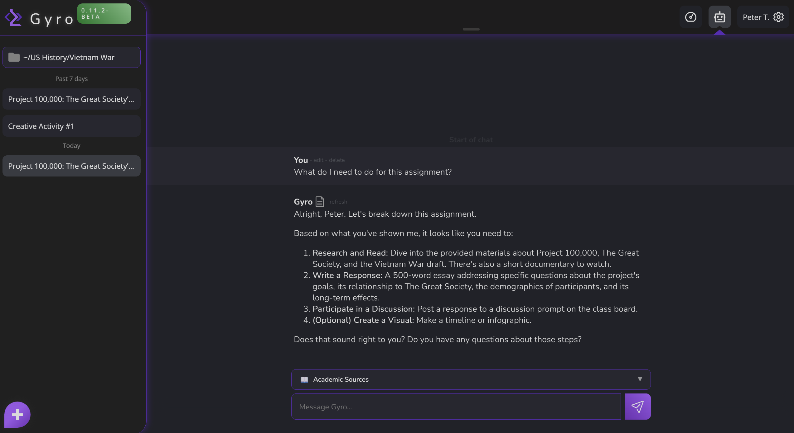
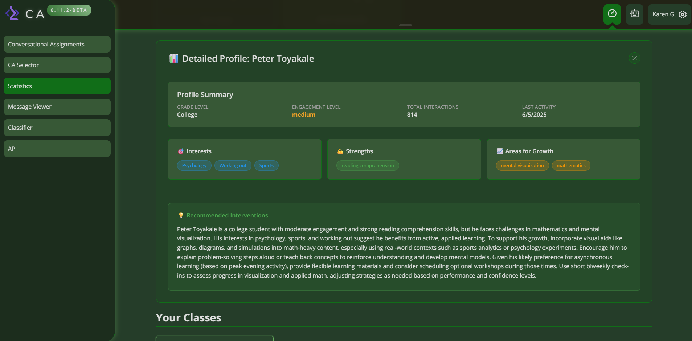

LindauerAI
Two AI systems. One learning revolution.
Overview
LindauerAI was an open-source ed-tech startup I founded in 2024. We built an integrated dual-AI learning platform designed to think with students, not for them, while empowering teachers with real-time classroom intelligence.
The platform blended two complementary systems:
- Gyro – a personalized Socratic AI tutor for K-12 students.
- CA (Classroom Analyzer) – a teacher dashboard that turns AI conversation data into actionable insights.
Core Technology
- Dual-AI Architecture – separate, cooperative agents for students and teachers to prevent conflicts of interest while sharing anonymized learning signals.
- LRAG (Latent Retrieval-Augmented Generation) – patent-pending method that answers with textbook-aligned content while factoring in previous chat messages.
- Google Classroom Integration – OAuth 2.0 & Classroom APIs sync rosters and assignments.
Funding & Market Interest
By mid 2025, LindauerAI achieved a $4M valuation and $53k raise. The company had previously secured significant market interest, including signed letters of intent from several school districts.
Product Tour
Gyro – Socratic Tutor

- Adaptive Socratic questioning.
- Document upload & analysis (textbooks, PDFs ≤ 20 MB).
- Transparent citations with adjustable excerpt length.
CA – Classroom Analyzer

- Class & student-level analytics (engagement, misconception clusters, learning-target mastery).
- AI content classifier for academic-integrity checks.
- Conversational assignment builder with smart rubrics.
Responsible AI
We implemented robust safeguards including automatic source citation, content-moderation filters, and an opt-out data policy compliant with FERPA. Our models never train on private student data.